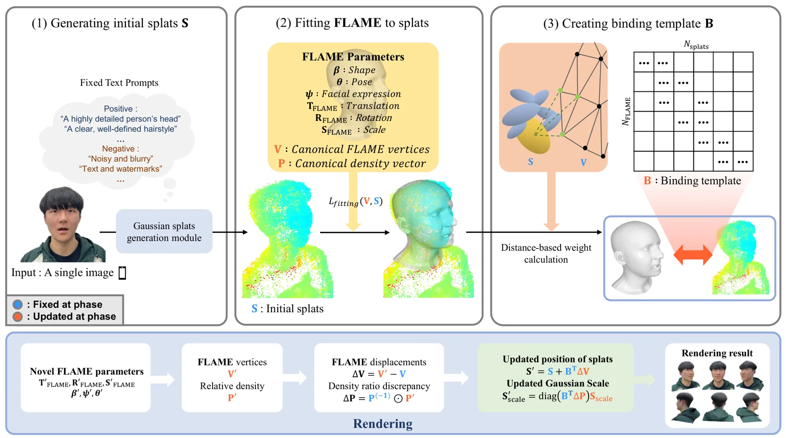
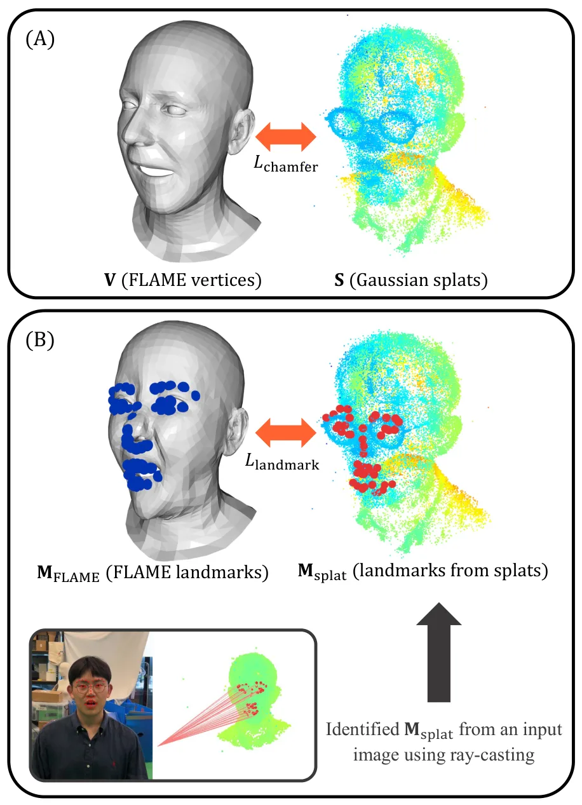
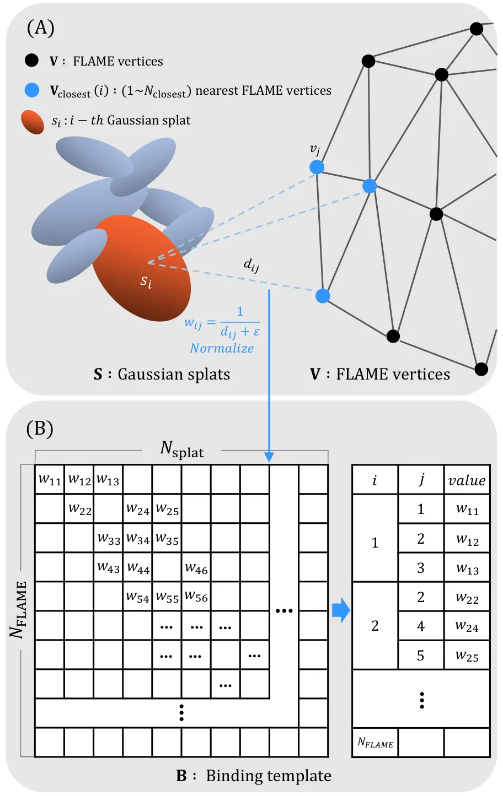
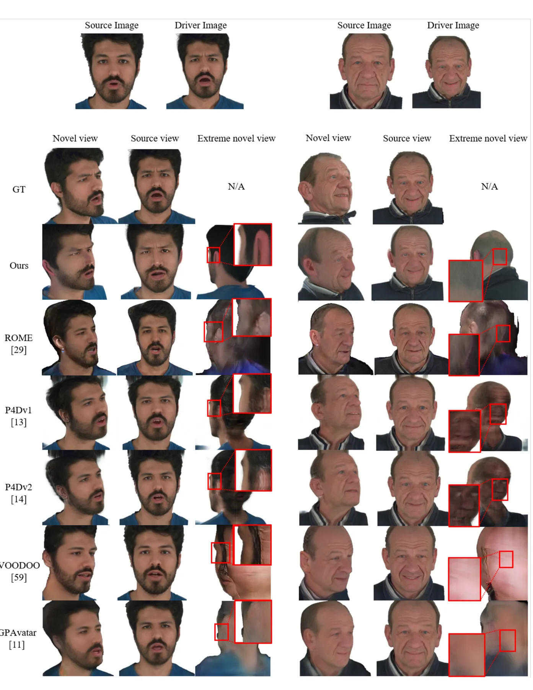
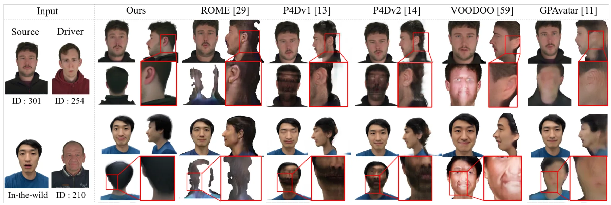
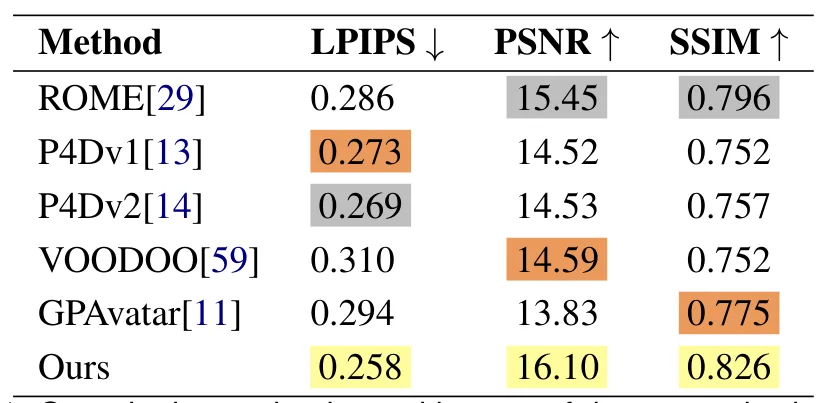

S-Avatar：从单幅图像生成扩散引导的 Gaussian 头部虚拟人S-Avatar: Diffusion-Guided Gaussian Head Avatars from a Single Image
单图 3DGS 重建、参数模型对齐和实时变形链条完整且已给出项目页；应用集中于头部虚拟人，几何精度与通用场景外推能力有限。
一句话工作总结
把单图扩散生成的 3DGS 与 FLAME 对齐并绑定，实现可实时变形、视角一致性更好的头部虚拟人。
摘要
S-Avatar 从单张图像构建可实时驱动的 3D 头部虚拟人。流程先由 diffusion-based Gaussian generation module 合成高分辨率 3DGS，再通过优化参数和空间变换将 FLAME 参数化头模与 Gaussian 对齐，最后建立记录初始 splats 与 FLAME 空间关系的 binding template，使 3DGS 可随表情和姿态变化。作者称该方法在新视角和表情生成上优于现有方法，并改善未见视角下的一致性。
We propose S-Avatar, a novel method for generating photorealistic 3D head avatars from a single image using a diffusion-guided 3D model generation module and strategies for animating 3D Gaussian Splatting (3DGS). While single-image head avatar reconstruction is crucial for lifelike Virtual Reality (VR) applications, existing approaches often struggle to preserve 3D consistency under unseen viewpoints. S-Avatar addresses this limitation through a three-stage pipeline. First, a high-resolution 3DGS is synthesized directly from a single image using a diffusion-based Gaussian splat generation module. Next, the parametric head model FLAME is aligned with the generated 3DGS by optimizing its parameters and spatial transformations. Finally, to adapt the 3DGS to FLAME variations, we construct a binding template that encodes the spatial relationship between the initial splats and FLAME. The dynamic 3D head avatar can then be rendered in real time by deforming the 3DGS with the binding template. By combining diffusion-guided canonical 3DGS generation with FLAME-based control, our method achieves efficient and accurate reconstruction with enhanced 3D consistency. Evaluations on public datasets demonstrate that S-Avatar outperforms state-of-the-art methods in novel-view and expression generation, achieving superior realism and consistency. Consequently, our approach represents a significant advance in accessible avatar creation, applicable to a wide range of VR/AR applications. The project page is available at https://github.com/hailsong/savatar.
中文解读摘录
图表/页面预览

{kind=link}

{kind=link}

{kind=link}

{kind=link}

{kind=link}

{kind=link}
